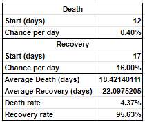
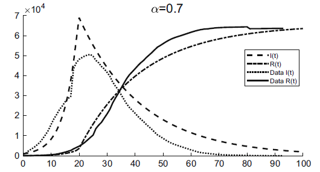
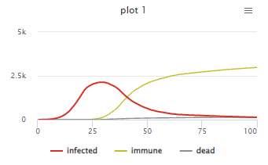
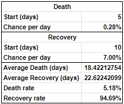
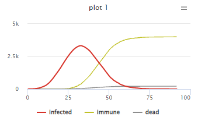
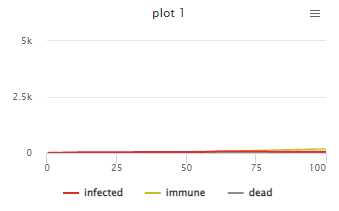

Agent-based Model Simulation of an SIR Model of COVID-19
Introduction
An accurate model of the spread of COVID-19 is valuable in our proper response to the pandemic. According to the Centers for Disease Control and Prevention, “Forecasts of disease burden help inform public health decision making by projecting the likely impact of COVID-19”. As such, the CDC is constantly finding ways to better model the spread of the pandemic, in order to create a more reliable projection of the spread of the pandemic in the future. Such projections may be the difference in a well-prepared response to a wave of infections, and a disaster.
Models for Pandemic Simulation
Two of the models used for the simulation of the spread of the pandemic are the Susceptible-Infected-Susceptible (SIS) model and the Susceptible-Infected-Recovered (SIR) model. These models are named after the assume stages of progression of the pandemic for each individual person.
The SIS model assumes that re-infections may occur on the same person. Each person in the pandemic goes through two phases: Susceptible and Infected. A susceptible person may become infected after being in contact with an infected person. Then after the course of the infection, the person may be cured of the infection, which will make them susceptible again, or die from the infection, in which case they are removed from the population.
In the case where there is gained immunity from the disease after recovery, a separate phase is added: Recovered. It may be assumed that a Recovered person is no longer susceptible to the disease, and thus may no longer become infected. This creates three phases for the simulation: Susceptible, Infected, and Recovered. This is the Susceptible-Infected-Removed (SIR) model.
These two models are useful for diseases with different bahaviors. For example, an SIS model is more suitable for the common flu, where re-infections are common an expected. An SIR model is more suitable for COVID-19, where the chances of re-infection is assumed to be relatively low.
Methodology
This NetLogo Agent-Based Model uses the 2020 study of Xiaowei Chen, Jing Li, Chen Xiao and Peilin Yang: "Numerical solution and parameter estimation for uncertain SIR model with application to COVID-19" as the basis of the parameters of the SIR model.
The study is based on a previous SIS study of of the spread of diseases, prior to the COVID-19 pandemic. However, the COVID-19 pandemic is assumed to more closely follow an SIR model. As such, the researchers have adapted the previous study into an SIR model, in order to create a model of the new pandemic.
The study assumes two phases of the sample pandemic data, with a change in 'top leader' on February 13. The change in leadership and policy has altered the dynamics of the spread of the pandemic, which included a total locdown policy of Hubei province.
β1 = 3.9015 ∗ 10−9
σI1 = 1.0015 ∗ 10−2
λ1 = 9.7829 ∗ 10−3
σR1 = 1.2125 ∗ 10−3
β2 = −1.6777 ∗ 10−11
σI2 = 1.0065 ∗ 10−2
λ2 = 3.9456 ∗ 10−2
σR2 = 4.4196 ∗ 10−4
The disease transmission coefficient β obtained for the second stage of the sample data is a miniscule negative number. It is unrealistic to have a negative disease transmission coefficient. Thus, we will assume that this has a value of 0, which is representative of the complete lockdown policy that has been enacted during this stage of the pandemic after replacement of the 'top leader'.
The proportions used for the NetLogo Agent-based Model Simulation to the real-world example as presented in the study are as follows:
1 day is represented as 1 tick.
200 persons are represented as 1 "turtle".
As there are additional assumptions made in translating the real-life model to the NetLogo agent-based model, the degree of interaction between the agents have to be calibrated in order to attain a curve similar to that of the original model. These parameters exclusive to the agent-based model, such as the assumed movement of the turtles, the size of the available area, and the duration of the infection, have to be tweaked to be useful as a representation of the existing model. Based on the study of drugs.com [3], the average time for deaht from the pandemic is 18.5 days, and the average time for recovery is 22 days. Additionally, according to the study of Mathieu, E. (2020), the death rate for COVID-19 in Wuhan, China near the start of the pandemic is around 4-5%. Based on these values, the following values are used as estmates for the turtle-specific values of death and recovery:
The movement-related turtle values for the agents are then calibrated to create a model similar to the SIR graph as presented in the study basis. Notably, the study involves a lockdown around day 20, so this model incorporates two movement values: one pre-lockdown and one post-lockdown. This is the infected/removed graph from the study:
Attempting to create the graph with the NetLogo model yields the following model at best:
Notably, the curve is too smooth compared to the graph. This might indicate that the duration of the infections on the turtles is too consistent. Thus, the infection-related variables are changed in an attempt to add more variance to the infection duration:
And repeating the movement calibration process, the model is finalized.
Simulation Model
Results and Discussion
The baseline model closely correlates the spread of the pandemic as recorded in the Hubei province. However, the model may be used to predict the trend of the disease had different actions been performed. For example, the following simulation shows the spread of the disease had the lockdown not been enacted:
Notably, the peak of the pandemic has considerably more infected people.
The following model assumes the opposite: total lockdown immediately at the start of the outbreak, in order to stifle the sperad of the disease.
The lockdown significantly stifles the spread of the disease, to the point that it barely spreads to people.
This model may be used with a different baseline data. However, the parameters will have to be re-calibrated in order to be better suited for the data used in simulation.
Conclusion
The simulation model can be used to estimate the extent of the pandemic with multiple diffusion sources via uncertain differential equations. If there is limited data, the model can still use parameters from previous literature. This model may be used to predict potential demand for ICU beds and ventilators.
It should be noted, however, that while this model highlights the effectiveness of the lockdown, this does not serve as an endorsement of the severity of the lockdown in consideration of human rights and quality of life.
References
[1] Chen, X., Li, J., Xiao, C., & Yang, P. (2020). Numerical solution and parameter estimation for uncertain SIR model with application to COVID-19. Fuzzy Optimization and Decision Making, 20(2), 189–208. https://doi.org/10.1007/s10700-020-09342-9
[2] Coronavirus Disease 2019 (COVID-19). (2020, February 11). Centers for Disease Control and Prevention. https://www.cdc.gov/coronavirus/2019-ncov/science/forecasting/forecasting-math-modeling.html
[3] How do COVID-19 symptoms progress and what causes death? (n.d.). Drugs.com. https://www.drugs.com/medical-answers/covid-19-symptoms-progress-death-3536264/
[4] Mathieu, E. (2020, March 5). Coronavirus Pandemic (COVID-19). Our World in Data. https://ourworldindata.org/mortality-risk-covid